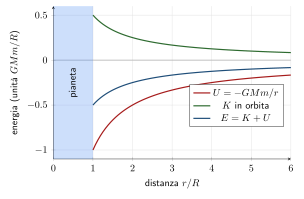
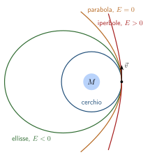
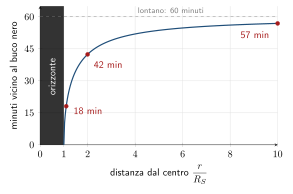

- usare l’energia potenziale gravitazionale \(U=-\dfrac{GMm}{r}\) e capire perché è negativa;
- calcolare l’energia totale di un satellite e il lavoro per cambiare orbita;
- usare la conservazione dell’energia e del momento angolare sulle orbite ellittiche;
- calcolare la velocità di fuga e il raggio di Schwarzschild;
- spiegare perché vicino a un buco nero il tempo rallenta e che cos’è la spaghettificazione.
1L’energia potenziale gravitazionale
- Lavoro di una forza costante parallela allo spostamento: \(L=F\,s\). È positivo se la forza “aiuta” il movimento, negativo se lo ostacola.
- Energia cinetica: \(K=\tfrac12mv^2\). Il lavoro totale è uguale alla sua variazione: \(L=\Delta K\).
- Energia potenziale vicino al suolo: \(U=mgh\). Per una forza conservativa \(L=-\Delta U\).
- Conservazione dell’energia: senza attriti \(K+U\) resta costante.
La formula \(mgh\) vale solo se \(g\) è costante. Un satellite che sale di migliaia di chilometri sente un \(g\) molto più piccolo (a 36 000 km vale 0,22 m/s²). Serve una formula valida a qualsiasi distanza.
Si dimostra che il lavoro della gravità per andare da A a B dipende solo dalle distanze iniziale e finale dal centro, non dalla strada fatta. La gravità è quindi una forza conservativa, e ha un’energia potenziale:
- è sempre negativa e aumenta (verso 0) allontanandosi;
- per piccole altezze si ritrova \(\Delta U\approx mgh\).
Lo zero dell’energia potenziale si può mettere dove si vuole: con \(mgh\) lo mettevi sul pavimento o sul tavolo. Qui conviene metterlo infinitamente lontano, dove la Terra non tira più.
Immagina la Terra in fondo a un pozzo profondissimo, con il “livello del terreno” (\(U=0\)) all’infinito. Noi stiamo in fondo, quindi la nostra “quota” è negativa. Salendo, \(U\) diventa meno negativa e si avvicina a 0 senza superarlo. Le pareti sono ripide vicino alla Terra e quasi piatte lontano: vicino alla Terra serve tanta energia per salire di poco.

Un corpo sale dalla superficie fino all’altezza \(h\). La variazione esatta di energia potenziale è:
\[ \Delta U=-\frac{GM_Tm}{R_T+h}+\frac{GM_Tm}{R_T}=GM_Tm\,\frac{h}{R_T(R_T+h)} \]Se \(h\ll R_T\), allora \(R_T+h\approx R_T\) e \(\Delta U\approx\dfrac{GM_T}{R_T^2}\,mh=mgh\).
- Non dimenticare il segno meno in \(U\) e in \(E\).
- Usa \(mgh\) solo se \(h\) è piccola rispetto al raggio del pianeta (qualche km sì, centinaia di km no).
2L’energia di un’orbita
Per un satellite in orbita circolare l’energia cinetica vale \(K=\dfrac{GMm}{2r}\) (esercizio 13 della lezione 2). Sommando l’energia potenziale:
L’energia totale è negativa (il satellite è legato) ed è metà dell’energia potenziale. Per salire su un’orbita più alta bisogna fornire energia: \(\Delta E=\dfrac{GMm}{2}\left(\dfrac{1}{r_1}-\dfrac{1}{r_2}\right)\).
Pensa all’energia come a un conto in banca. \(K\) è sempre positiva (soldi in tasca), \(U\) è negativa (un debito con la Terra). Se il totale è negativo, il debito supera i soldi: il satellite non può “pagare” per uscire dal pozzo e resta legato. Se il totale è zero o positivo, può andarsene.
Un satellite scende su un’orbita più bassa. Va più veloce o più lento? La sua energia totale aumenta o diminuisce?
Risposta
Va più veloce, perché \(v=\sqrt{\dfrac{GM}{r}}\). Ma l’energia totale diminuisce, perché \(-\dfrac{GMm}{2r}\) diventa più negativa. Per scendere bisogna frenare: l’attrito con l’aria fa scendere lentamente la ISS e allo stesso tempo la fa andare più veloce.Orbite ellittiche
Lungo un’ellisse la distanza cambia, quindi cambiano velocità ed energia potenziale. Due grandezze però restano costanti:
- l’energia meccanica \(E=\tfrac12mv^2-\dfrac{GMm}{r}\), perché la gravità è conservativa. Quando il pianeta si avvicina, \(U\) scende e \(K\) sale: va più veloce;
- il momento angolare, che vale \(m\,r\,v\sin\theta\), perché la gravità punta sempre verso il centro (forza centrale). Al perielio e all’afelio \(\theta=90^\circ\), quindi \(r_Pv_P=r_Av_A\): è la seconda legge di Keplero della lezione 1.
Una pattinatrice che gira su se stessa chiude le braccia e gira più veloce, le apre e rallenta: il suo momento angolare si conserva. Un pianeta che si avvicina al Sole fa la stessa cosa.

| Energia totale | Traiettoria | Che cosa succede |
|---|---|---|
| \(E<0\) | ellisse (o cerchio) | legato, torna sempre |
| \(E=0\) | parabola | sfugge, arriva all’infinito con \(v\to0\) |
| \(E>0\) | iperbole | sfugge con velocità residua |
3Velocità di fuga e buchi neri
Lancia una palla verso l’alto: sale, rallenta, si ferma e ricade. Più forte la lanci, più in alto arriva. Siccome la gravità diminuisce con la distanza, esiste una velocità oltre la quale la palla rallenta sempre ma non si ferma mai e se ne va per sempre. È la velocità di fuga, quella che serve per risalire fino in cima al pozzo.
Il caso limite è arrivare all’infinito con velocità zero, dove \(K=0\) e \(U=0\). L’energia totale è zero lì, quindi deve essere zero anche alla partenza:
Per la Terra \(v_f=11{,}2\) km/s. Non dipende dalla massa lanciata, ed è \(\sqrt2\) volte la velocità di un’orbita radente (7,9 km/s).
Per la Terra 11,2 km/s sono circa 40 000 km/h. La velocità di fuga è 2,4 km/s per la Luna, 5,0 km/s per Marte e 60 km/s per Giove. Un pianeta con velocità di fuga bassa perde l’atmosfera, perché le molecole di gas più veloci scappano, e per questo la Luna non ha atmosfera.
Buchi neri. Se comprimi una massa in un raggio sempre più piccolo, \(v_f=\sqrt{\dfrac{2GM}{R}}\) cresce. Quando supera la velocità della luce \(c\), neanche la luce riesce a uscire, e l’oggetto appare nero.
Questo calcolo usa la fisica di Newton, mentre quello corretto richiede la relatività generale di Einstein. Per coincidenza la formula è la stessa. Nel 2022 è stata pubblicata la prima immagine di Sagittarius A*, il buco nero al centro della nostra galassia: ha una massa di circa 4 milioni di Soli.
Vicino a un buco nero: tempo, spazio e maree
Newton ti dà il raggio di Schwarzschild, ma vicino a un buco nero succedono cose che la sua fisica non spiega. Per capirle serve un fatto scoperto da Einstein: la luce va sempre alla stessa velocità \(c\), per chiunque la misuri.
Una palla lanciata verso l’alto rallenta salendo: perde energia cinetica per risalire il pozzo. Anche la luce che esce dal pozzo di un buco nero perde energia, ma non può rallentare, perché va sempre a \(c\). Allora perde energia in un altro modo: abbassa la sua frequenza e diventa più rossa.
Ora pensa a un orologio vicino al buco nero che manda un lampo a ogni secondo. Da lontano i lampi arrivano più distanziati di un secondo: quell’orologio, visto da fuori, va più piano. L’orologio funziona benissimo: è che vicino a una massa grande passa meno tempo. È la dilatazione gravitazionale del tempo.
Vale per un orologio tenuto fermo a distanza \(r\) dal centro, confrontato con uno molto lontano. Mentre lontano passa un’ora, a \(r=10\,R_S\) passano 57 minuti, a \(r=2\,R_S\) 42 minuti, a \(r=1{,}1\,R_S\) 18 minuti. Avvicinandosi a \(R_S\) il fattore tende a zero, e sotto \(R_S\) nessun oggetto può restare fermo.

E le distanze? Da lontano vedi la luce vicino al buco nero avanzare più lentamente di \(c\). Chi sta lì, invece, la misura sempre a \(c\). I conti tornano perché per lui passano meno secondi (gli orologi vanno più piano) e, nella direzione del centro, ci sono più metri: le distanze misurate con il metro verso il buco nero sono più lunghe di quanto ti aspetteresti guardando da fuori. Il tempo si accorcia e lo spazio si allunga proprio in modo che la velocità della luce resti \(c\).
L’effetto c’è anche per la Terra, solo molto più piccolo. I satelliti GPS orbitano a \(r=2{,}66\cdot10^7\) m (esercizio 10 della lezione 2), più in alto nel pozzo di noi. Per un campo debole la formula si può approssimare, e la differenza tra un orologio in orbita e uno a terra è:
\[ \frac{\Delta t}{t}\approx\frac{GM_T}{c^2}\left(\frac{1}{R_T}-\frac{1}{r}\right)=5{,}28\cdot10^{-10} \]- In un giorno (86 400 s) l’orologio del satellite va avanti di 45,6 milionesimi di secondo (μs) rispetto a uno a terra, per effetto della gravità.
- Il satellite si muove a 3,87 km/s, e un orologio in movimento va più piano (relatività ristretta): questo lo fa restare indietro di 7,2 μs al giorno.
- Totale: 38,4 μs al giorno in avanti. Il GPS calcola le distanze dal tempo che impiega il segnale a viaggiare alla velocità \(c\). Se non si correggessero gli orologi, l’errore crescerebbe di circa 11,5 km al giorno.
Che cosa vede chi sta fuori
Immagina una sonda che cade nel buco nero e manda un lampo a ogni secondo del suo orologio. Da lontano vedi i lampi arrivare sempre più distanziati, sempre più rossi e deboli. La sonda sembra rallentare avvicinandosi a \(R_S\), e non la vedi mai attraversarlo: la sua luce si affievolisce fino a sparire. Per questo la sfera di raggio \(R_S\) si chiama orizzonte degli eventi: quello che succede dentro non può mandarti nessun segnale.
Che cosa sente chi cade
Per la sonda è tutto diverso. È in caduta libera, quindi non sente il proprio peso, come gli astronauti sulla ISS. Il suo orologio per lei va normalmente: un secondo è sempre un secondo. La dilatazione del tempo è un confronto tra due orologi in posti diversi, non qualcosa che senti sul tuo. All’orizzonte non c’è nessuna superficie: lo attraversa senza notare niente di speciale in quel punto.
Due cose però la sonda non le può evitare.
- Non può più tornare indietro. Dentro l’orizzonte ogni strada porta verso il centro, anche accendendo i motori al massimo. Per il suo orologio il viaggio fino al centro dura poco: al massimo circa un minuto per Sagittarius A*, meno di un millesimo di secondo per un buco nero di 10 masse solari.
- Le maree. La gravità tira più forte la parte più vicina al buco nero e meno quella lontana. È la spaghettificazione, spiegata qui sotto.
Un corpo lungo \(L\) cade verso il buco nero con i piedi avanti. I piedi, alla distanza \(r\), hanno un’accelerazione più grande della testa, a \(r+L\). La differenza è:
\[ \Delta g=\frac{GM}{r^2}-\frac{GM}{(r+L)^2}\approx\frac{2GM\,L}{r^3}\qquad(L\ll r) \]Il corpo viene stirato nella direzione del buco nero e schiacciato di lato, come uno spaghetto. Lo stesso effetto, molto più debole, produce le maree degli oceani causate dalla Luna.
Prendi un corpo lungo \(L=2\) m e calcola \(\Delta g\) all’orizzonte, cioè a \(r=R_S\). Per confronto, nella prima riga c’è \(\Delta g\) sulla superficie della Terra (e il raggio in cui bisognerebbe comprimerla per farne un buco nero).
| Dove | \(R_S\) | \(\Delta g\) tra piedi e testa |
|---|---|---|
| sulla Terra (\(r=R_T\)) | 8,8 mm | \(6{,}2\cdot10^{-6}\) m/s² |
| buco nero di 10 masse solari | 29,5 km | \(2{,}1\cdot10^{8}\) m/s², 20 milioni di volte \(g\) |
| Sagittarius A* (4 milioni di Soli) | \(1{,}2\cdot10^{7}\) km | \(1{,}3\cdot10^{-3}\) m/s², circa un decimillesimo di \(g\) |
Nel buco nero piccolo la differenza arriva già a 10 \(g\) a circa 3800 km dal centro: il corpo viene fatto a pezzi molto prima di raggiungere l’orizzonte. In Sagittarius A* lo attraversa senza sentire quasi niente, e viene stirato solo più tardi, quando si avvicina al centro.
- Più un buco nero è grande, più all’orizzonte le maree sono deboli. Infatti \(R_S\) è proporzionale a \(M\): se la massa raddoppia, nella formula di \(\Delta g\) il numeratore raddoppia ma \(R_S^3\) diventa 8 volte più grande, e la marea si riduce a un quarto.
- La formula \(\sqrt{1-\dfrac{R_S}{r}}\) vale per un orologio fermo, non per uno che cade.
- Da fuori non vedi la sonda “congelata” per sempre sull’orizzonte: la sua luce diventa sempre più rossa e debole, e la sonda sparisce.
Un’astronauta cade in Sagittarius A* guardando il suo orologio. Quando attraversa l’orizzonte, vede le lancette rallentare?
Risposta
No. Per lei l’orologio va sempre normalmente. Sono gli osservatori lontani a vedere i suoi segnali arrivare sempre più lenti e rossi, fino a sparire.4Esercizi
Dati: \(G=6{,}67\cdot10^{-11}\ \mathrm{N\,m^2/kg^2}\), \(M_T=5{,}97\cdot10^{24}\) kg, \(R_T=6{,}37\cdot10^6\) m, \(GM_T=3{,}98\cdot10^{14}\ \mathrm{m^3/s^2}\), \(c=3{,}00\cdot10^8\) m/s. Altri dati nel formulario.
Un satellite di 1200 kg orbita a 1000 km di quota.
- Calcola la sua energia potenziale gravitazionale (zero all’infinito).
Risultato
\(U=-6{,}48\cdot10^{10}\) J.Soluzione svolta
- \(r=R_T+h=6{,}37\cdot10^6+1{,}00\cdot10^6=7{,}37\cdot10^6\) m.
- \(U=-\dfrac{GM_Tm}{r}=-\dfrac{3{,}98\cdot10^{14}\cdot1200}{7{,}37\cdot10^6}=-6{,}48\cdot10^{10}\) J.
Una sonda di 500 kg viene portata dalla superficie terrestre fino a un’altezza pari al raggio terrestre (\(h=R_T\)).
- Quanto lavoro bisogna fare contro la gravità?
- Quanto otterresti usando \(mgh\)? Perché il risultato è sbagliato?
Risultato
\(1{,}56\cdot10^{10}\) J. Con \(mgh\): \(3{,}12\cdot10^{10}\) J, il doppio.Soluzione svolta
- Il lavoro contro la gravità è uguale all’aumento di energia potenziale: \(\Delta U=-\dfrac{GM_Tm}{2R_T}+\dfrac{GM_Tm}{R_T}=\dfrac{GM_Tm}{2R_T}\).
- \(\Delta U=\dfrac{3{,}98\cdot10^{14}\cdot500}{2\cdot6{,}37\cdot10^6}=1{,}56\cdot10^{10}\) J.
- Con \(mgh=500\cdot9{,}81\cdot6{,}37\cdot10^6=3{,}12\cdot10^{10}\) J: il doppio. Salendo, \(g\) diminuisce fino a un quarto, quindi \(mgh\) sovrastima molto il lavoro.
Un satellite di 900 kg è in orbita circolare a 600 km di quota.
- Calcola la sua energia cinetica, l’energia potenziale e l’energia totale.
Risultato
\(K=2{,}57\cdot10^{10}\) J; \(U=-5{,}14\cdot10^{10}\) J; \(E=-2{,}57\cdot10^{10}\) J.Soluzione svolta
- \(r=6{,}37\cdot10^6+0{,}60\cdot10^6=6{,}97\cdot10^6\) m.
- \(U=-\dfrac{GM_Tm}{r}=-\dfrac{3{,}98\cdot10^{14}\cdot900}{6{,}97\cdot10^6}=-5{,}14\cdot10^{10}\) J.
- \(K=\dfrac{GM_Tm}{2r}=-\dfrac U2=2{,}57\cdot10^{10}\) J.
- \(E=K+U=-2{,}57\cdot10^{10}\) J. Nota: \(E=-K\), vale per ogni orbita circolare.
Un satellite per telecomunicazioni di 2000 kg viene prima messo in un’orbita circolare a 400 km di quota, poi portato sull’orbita geostazionaria (\(r=4{,}22\cdot10^7\) m).
- Calcola l’energia totale nelle due orbite.
- Quanta energia devono fornire i motori, come minimo?
Risultato
\(E_1=-5{,}88\cdot10^{10}\) J; \(E_2=-9{,}43\cdot10^{9}\) J; servono \(4{,}94\cdot10^{10}\) J.Soluzione svolta
- \(r_1=6{,}37\cdot10^6+0{,}40\cdot10^6=6{,}77\cdot10^6\) m.
- \(E_1=-\dfrac{GM_Tm}{2r_1}=-\dfrac{3{,}98\cdot10^{14}\cdot2000}{2\cdot6{,}77\cdot10^6}=-5{,}88\cdot10^{10}\) J.
- \(E_2=-\dfrac{3{,}98\cdot10^{14}\cdot2000}{2\cdot4{,}22\cdot10^7}=-9{,}43\cdot10^{9}\) J.
- \(\Delta E=E_2-E_1=-0{,}943\cdot10^{10}+5{,}88\cdot10^{10}=4{,}94\cdot10^{10}\) J.
L’energia totale aumenta (diventa meno negativa) anche se in alto il satellite va più piano.
Giove ha massa \(1{,}90\cdot10^{27}\) kg e raggio \(7{,}15\cdot10^7\) m.
- Calcola la velocità di fuga da Giove.
Risultato
\(v_f=59{,}5\) km/s.Soluzione svolta
- \(v_f=\sqrt{\dfrac{2GM}{R}}=\sqrt{\dfrac{2\cdot6{,}67\cdot10^{-11}\cdot1{,}90\cdot10^{27}}{7{,}15\cdot10^7}}=\sqrt{3{,}54\cdot10^9}\).
- \(v_f=5{,}95\cdot10^4\) m/s \(=59{,}5\) km/s, più di 5 volte quella terrestre.
Un satellite percorre un’orbita ellittica attorno alla Terra. Al perigeo dista \(7{,}00\cdot10^6\) m dal centro e viaggia a 9,24 km/s; all’apogeo dista \(2{,}10\cdot10^7\) m.
- Calcola la velocità all’apogeo con la conservazione del momento angolare.
- Verifica che l’energia meccanica per unità di massa \(\dfrac{E}{m}=\tfrac12v^2-\dfrac{GM_T}{r}\) sia la stessa nei due punti.
Risultato
\(v_A=3{,}08\) km/s; \(\dfrac{E}{m}\approx-1{,}42\cdot10^7\) J/kg in entrambi i punti.Soluzione svolta
- Al perigeo e all’apogeo velocità e raggio sono perpendicolari: \(r_Pv_P=r_Av_A\).
- \(v_A=v_P\dfrac{r_P}{r_A}=9{,}24\cdot10^3\cdot\dfrac{7{,}00\cdot10^6}{2{,}10\cdot10^7}=3{,}08\cdot10^3\) m/s.
- Perigeo: \(\tfrac12(9{,}24\cdot10^3)^2-\dfrac{3{,}98\cdot10^{14}}{7{,}00\cdot10^6}=4{,}27\cdot10^7-5{,}69\cdot10^7=-1{,}42\cdot10^7\) J/kg.
- Apogeo: \(\tfrac12(3{,}08\cdot10^3)^2-\dfrac{3{,}98\cdot10^{14}}{2{,}10\cdot10^7}=0{,}474\cdot10^7-1{,}895\cdot10^7=-1{,}42\cdot10^7\) J/kg.
L’energia è negativa, come per ogni orbita ellittica.
Un proiettile viene lanciato in verticale dalla superficie terrestre a 5,0 km/s (trascura l’aria).
- Che altezza massima raggiunge?
- Quanto otterresti con la formula \(h=\dfrac{v^2}{2g}\)? Perché è diverso?
Risultato
\(h_\text{max}=1{,}59\cdot10^3\) km. Con \(\dfrac{v^2}{2g}\): \(1{,}27\cdot10^3\) km, troppo poco.Soluzione svolta
- Conservazione dell’energia tra la superficie e il punto più alto (dove \(v=0\)): \(\tfrac12mv_0^2-\dfrac{GM_Tm}{R_T}=-\dfrac{GM_Tm}{r_\text{max}}\).
- Dividendo per \(m\) e isolando: \(\dfrac{1}{r_\text{max}}=\dfrac{1}{R_T}-\dfrac{v_0^2}{2GM_T}=\dfrac{1}{6{,}37\cdot10^6}-\dfrac{(5{,}0\cdot10^3)^2}{2\cdot3{,}98\cdot10^{14}}\).
- \(\dfrac{1}{r_\text{max}}=1{,}570\cdot10^{-7}-0{,}314\cdot10^{-7}=1{,}256\cdot10^{-7}\ \text{m}^{-1}\Rightarrow r_\text{max}=7{,}96\cdot10^6\) m.
- \(h_\text{max}=r_\text{max}-R_T=1{,}59\cdot10^6\) m.
- Con \(g\) costante: \(h=\dfrac{(5{,}0\cdot10^3)^2}{2\cdot9{,}81}=1{,}27\cdot10^6\) m. Salendo \(g\) diminuisce, quindi il proiettile rallenta meno e arriva più in alto.
Calcola il raggio di Schwarzschild di:
- un buco nero di 10 masse solari (\(M_S=1{,}99\cdot10^{30}\) kg);
- Giove (\(1{,}90\cdot10^{27}\) kg).
Risultato
29,5 km; 2,82 m.Soluzione svolta
- \(R_S=\dfrac{2GM}{c^2}=\dfrac{2\cdot6{,}67\cdot10^{-11}\cdot1{,}99\cdot10^{31}}{(3{,}00\cdot10^8)^2}=\dfrac{2{,}65\cdot10^{21}}{9{,}00\cdot10^{16}}=2{,}95\cdot10^4\) m \(=29{,}5\) km.
- Giove: \(R_S=\dfrac{2\cdot6{,}67\cdot10^{-11}\cdot1{,}90\cdot10^{27}}{9{,}00\cdot10^{16}}=2{,}82\) m.
Per diventare un buco nero, Giove dovrebbe essere compresso in una palla grande come una stanza.
Una sonda si trova alla distanza Terra-Sole (\(1{,}50\cdot10^{11}\) m) ma lontano dalla Terra.
- Che velocità serve per sfuggire al Sole partendo da lì?
- Confrontala con la velocità orbitale della Terra attorno al Sole.
Risultato
\(v_f=42{,}1\) km/s; la Terra va a 29,8 km/s, cioè \(\sqrt2\) volte meno.Soluzione svolta
- \(v_f=\sqrt{\dfrac{2GM_S}{r}}=\sqrt{\dfrac{2\cdot6{,}67\cdot10^{-11}\cdot1{,}99\cdot10^{30}}{1{,}50\cdot10^{11}}}=\sqrt{1{,}77\cdot10^9}=4{,}21\cdot10^4\) m/s.
- \(v_\text{orb}=\sqrt{\dfrac{GM_S}{r}}=\dfrac{v_f}{\sqrt2}=2{,}98\cdot10^4\) m/s.
Una sonda che parte dalla Terra sfrutta già i 29,8 km/s della Terra: una volta lasciata la Terra, le basta aggiungerne circa 12 nella direzione giusta.
La velocità di fuga dalla Terra è 11,2 km/s, quella di un’orbita radente è 7,9 km/s.
- Perché il rapporto tra le due è proprio \(\sqrt2\)?
- La velocità di fuga dipende dalla massa del razzo?
Risultato
\(\dfrac{v_f}{v_\text{orb}}=\sqrt{\dfrac{2GM}{R}\cdot\dfrac{R}{GM}}=\sqrt2\). No, la massa del razzo si semplifica.Soluzione svolta
- Orbita radente: \(v=\sqrt{\dfrac{GM}{R}}\). Fuga: \(v_f=\sqrt{\dfrac{2GM}{R}}\). Il rapporto è \(\sqrt2=1{,}41\), e infatti \(7{,}90\cdot1{,}414=11{,}2\).
- In \(\tfrac12mv_f^2=\dfrac{GMm}{R}\) la massa \(m\) compare in entrambi i membri e si semplifica: 11,2 km/s per un sasso come per un razzo.
Un meteoroide parte da fermo a una quota pari al raggio terrestre (\(h=R_T\)) e cade verso la Terra. Trascura l’atmosfera.
- Con che velocità arriva al suolo?
- Che cosa noti confrontandola con la velocità di un’orbita radente?
Risultato
\(v=\sqrt{\dfrac{GM_T}{R_T}}=7{,}90\) km/s, proprio la velocità dell’orbita radente.Soluzione svolta
- Conservazione dell’energia tra \(r=2R_T\) (fermo) e \(r=R_T\): \(-\dfrac{GM_Tm}{2R_T}=\tfrac12mv^2-\dfrac{GM_Tm}{R_T}\).
- \(\tfrac12v^2=\dfrac{GM_T}{R_T}-\dfrac{GM_T}{2R_T}=\dfrac{GM_T}{2R_T}\Rightarrow v=\sqrt{\dfrac{GM_T}{R_T}}\).
- \(v=\sqrt{\dfrac{3{,}98\cdot10^{14}}{6{,}37\cdot10^6}}=7{,}90\cdot10^3\) m/s.
È la stessa velocità di un’orbita radente, perché in entrambi i casi \(v^2=\dfrac{GM_T}{R_T}\).
Un asteroide che passa vicino al Sole ha energia meccanica totale positiva (rispetto al Sole).
- Che traiettoria segue? Tornerà a passare vicino al Sole?
Risultato
Un ramo di iperbole; non tornerà più.Soluzione svolta
Con \(E>0\) l’asteroide non è legato: anche all’infinito, dove \(U=0\), gli resta energia cinetica positiva. Percorre un ramo di iperbole e si allontana per sempre. Solo con \(E<0\) l’orbita sarebbe un’ellisse chiusa.